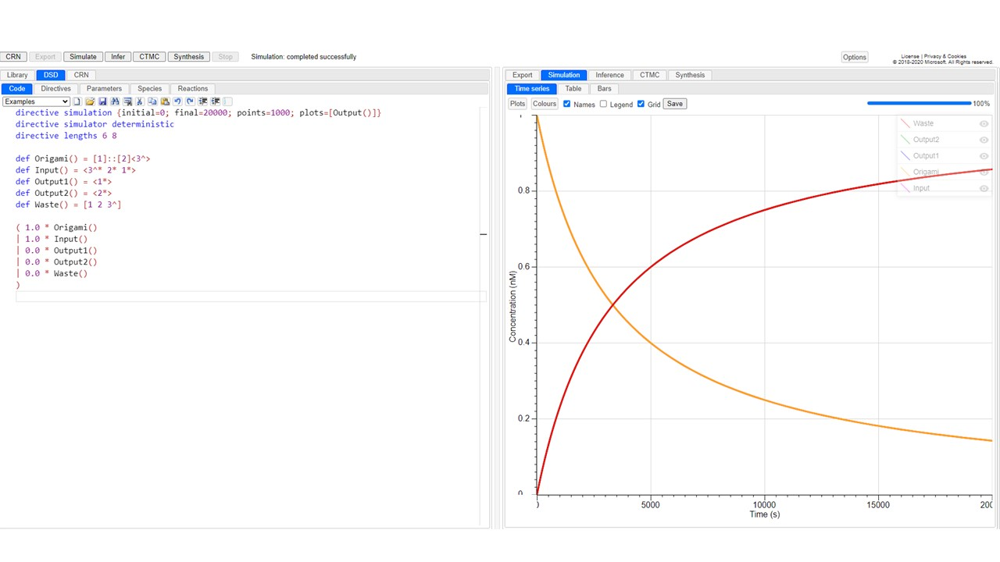
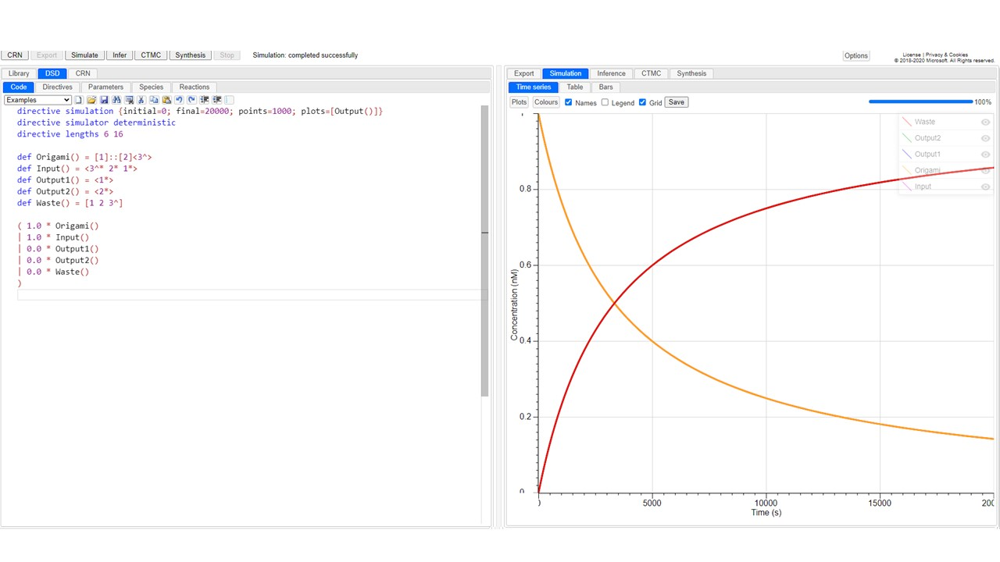
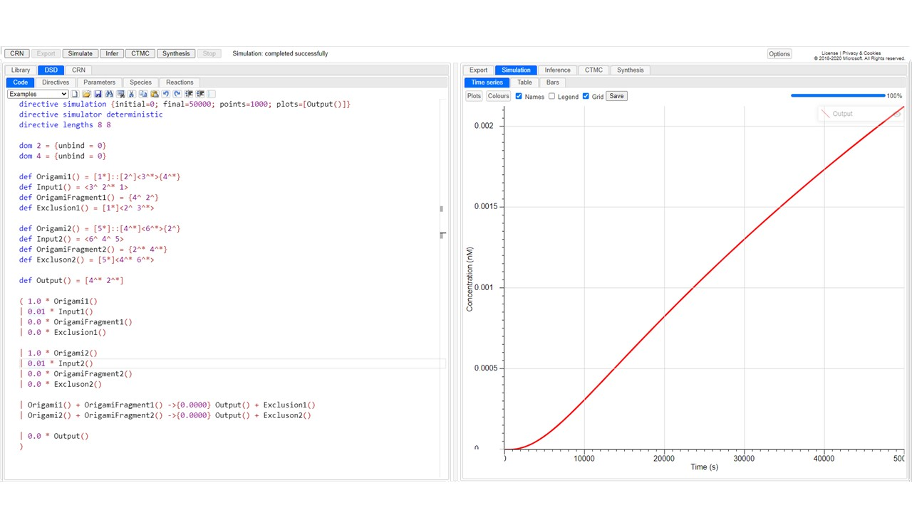
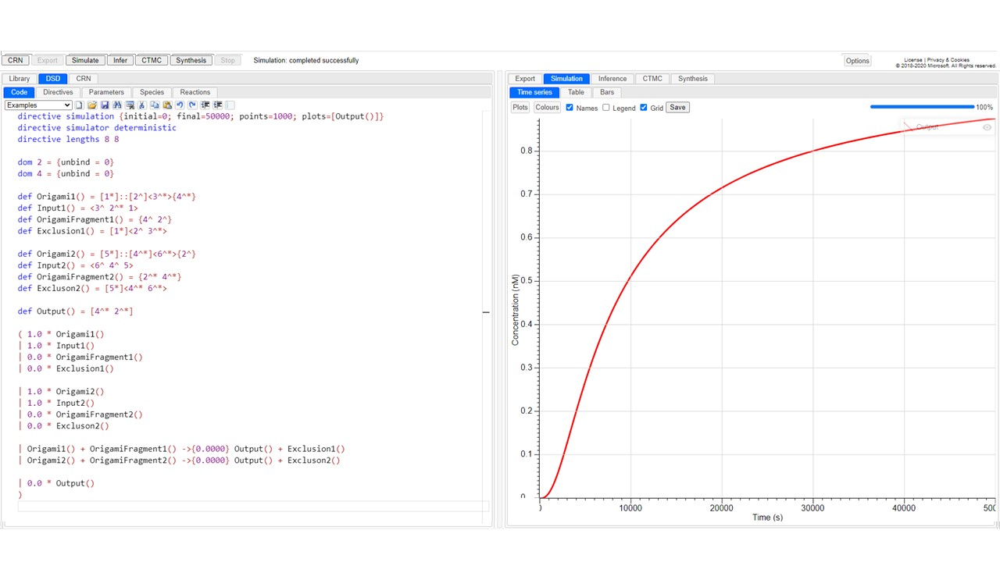
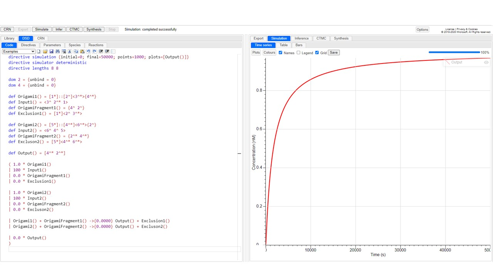

We used Visual DSD, a software tool for designing and prototyping DNA computing systems and devices, to simulate DNA motif devices.
First, for the abstract model presented in the "DESIGN" section, we checked whether strand displacement causes the RCA product subsequence to be single stranded in dependent on input DNA.
The calculations were performed with the toehold sequence elongated from the staple strand for strand displacement as 6nt and the parts of RCA product sequence as a scaffold strand as 8nt and 16nt, respectively.
The codes and results are shown below. In this case, parameters such as binding rate were left at the default settings.
figure3.3.1, code and overall network diagram
figure3.3.2, toehold domain=6nt, non-toehold domain=8nt
figure3.3.3, toehold domain=6nt, non-toehold domain=16nt
One thing that can be read from these results is that a toehold sequence length of about 6 nt is sufficient for strand displacement, whether the length of the non-toehold strand length is 8nt or 16nt. In addition,
a very small difference in strand displacement efficiency per time was observed.
Next, we simulated the reaction in which two RCA product DNAs are released by strand displacement and their DNA binding as a reaction in which the DNA Mochi Robot turn into gel.
See the network diagram below for the main reactions.
But there are two places where there are problems in using Visual DSD. The first is that it is an error to expose the domain defined as non-toehold and its reverse complementary strand domain each in a single-strand state as they may interact.
The second is that if all sequences that are assumed to be RCA product are unexposed, they will not show strand displacement reactions regardless of the presence or absence of toehold sequences. To solve these problems, we designed the network as follows.
First, we defined the mutual recognition sequences (2, 4 and their reverse complement) in the RCA product DNA as toehold sequences. This eliminates the first error. At the same time, we set only one of the domains of the mutual recognition sequence in the two devices to single-stranded exposure.
This eliminated the second error. Finally, the unbind rate in some reactions was set to 0. Without this, the binding of only the domain defined in the toehold sequence would dissociate at a higher rate than the recombination, and the mutual recognition sequences whose behavior we wanted to check would behave in a non-input-dependent manner.
Therefore, we set the ratio of such reactions to 0 to simulate input-dependent reactions. The results of the simulation with such settings are shown below.
figure3.3.4, code and overall network diagram
figure3.3.5, each input=0.0
figure3.3.6, each input=0.01(Origami:input=100:1)
figure3.3.7, each input=1.0(Origami:input=1:1)
figure3.3.8, each input=100(Origami:input=1:100)
These results show that gelation is controlled by the presence or absence of the two types of DNA and that the rate of formation varies with the concentration. In actual experiments, it is considered that gel formation does not occur with the same behavior as when the concentration of input1 and input2 is 0.01,
due to the time scale of the experimental system, the unbind rate, which is not originally 0, and the fact that not a small amount of DNA must be aggregated for gelation. It is also confirmed that gelation is controlled like an AND gate for two inputs according to follow figure.
figure3.3.9, input1=1.0, input2=0.0